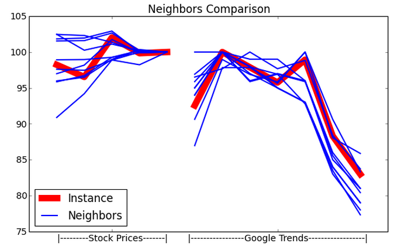

The previous model showed promise, but SKY decided that they'd use another approach to see if they can perform even better in the predictions. The basic idea was that in order to predict a certain stock's movement on a given Monday, SKY would look at how its stock price and Google Trends looked from last week, try to find similar cases that already occurred, and then assume that the stock would perform in a fashion similar to how the similar cases played out in history. In other words, if one imagines Google trend and stock price input data as a curve connecting dots corresponding to the data points, one could find similar-looking curves and see how the curves continued. Here is a picture of what that might mean:
The red line represents last week's information regarding the stock to be predicted and the blue lines represent similar instances in the past. The idea is that one can then predict where the red line will move on the basis of where the blue lines in fact did move. An intuitively obvious strategy, right? How could it possibly fail?
Unfortunately, even using this model SKY wasn't able to predict whether a stock would rise or fall with a success rate much better than 50%.